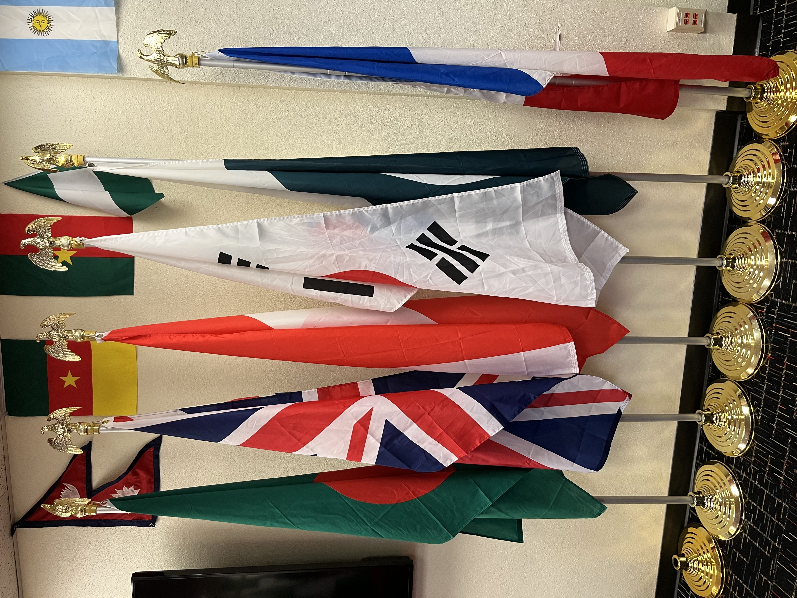
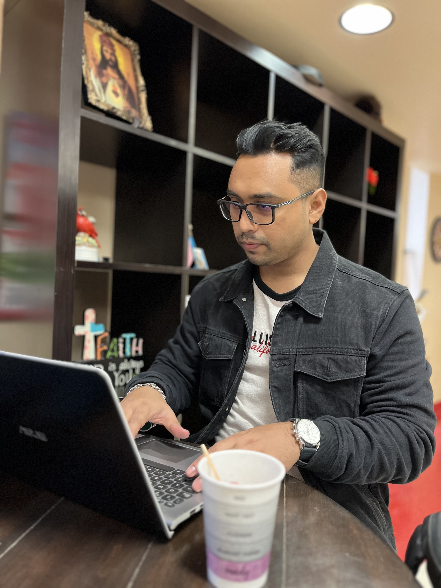

✈️ New Beginnings: My First Step into American Academic Life
Date: January 22, 2023 | Author: Nur Mohammad Ali

On January 22, 2023, I landed at George Bush Intercontinental Airport in Houston, Texas, at 7:00 PM. That moment changed my life. As I stepped off the plane, the first thing I saw was the glowing sign — “Welcome to Houston.”

Though excited, I faced a small challenge at immigration. My classes had already started on January 17th, and the officer took me to a separate room. Thankfully, I had a late arrival permission letter from my university. After reading it, the officer smiled and welcomed me warmly. I realized how important it is for F1 students to carry all necessary documents.
My good friend Richard from JCI came all the way to pick me up. A true gentleman with a kind heart, he dropped me off at my new apartment, The Edge in Beaumont. It was a four-bedroom apartment shared with six Bangladeshi roommates. We were all excited to start our first semester together!
The very next day, I had my first meal at the Catholic Student Center. It was delicious, but even more heartwarming was meeting Father Rodel. His generosity and hospitality reminded me of home. That experience became a symbol of kindness in my new journey.
That’s how my story in the United States began — filled with uncertainty, excitement, friendship, food, and faith. I started this journey as an F1 student, and I carry with me not just dreams, but deep gratitude for every person who supported me.
To all new international students — don’t worry if things feel overwhelming. Keep your documents ready, accept help with an open heart, and most of all — believe in your journey.
üì§ Share this blog
üí¨ Leave a Comment
Prefer email? You can send your thoughts directly to: nipun.nur@gmail.com